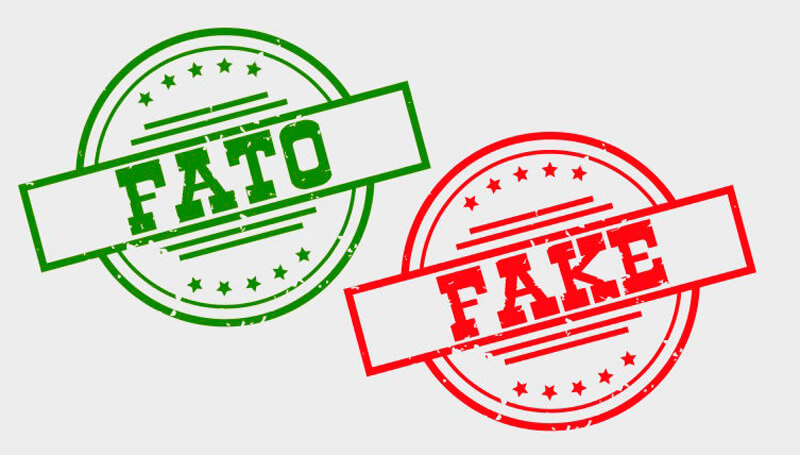

Quem deseja espalhar um boato pode retirar de contexto um dado ou declaração para usar em seu título ou no texto
de sua postagem. Para legitimar as Fake News, as páginas que produzem e divulgam esse tipo de informação
costumam misturar as publicações falsas com a reprodução de notícias verdadeiras de fontes confiáveis.
Como o termo 'fake news' virou arma nos dois lados da batalha política mundial.
Desinformação, boatos e mentiras existem há tempos. Mas o que pesquisadores descobriram foi uma combinação
perfeita entre algoritmos das redes sociais, sistemas de publicidade, pessoas dispostas a inventar conteúdo para
ganhar dinheiro fácil e uma eleição polêmica no país mais poderoso do mundo.
Dicas para identificar e evitar cair em Fake News:
Conheça 6 perigos que as notícias falsas podem trazer:
Verificar as fontes de informação da notícia.
A informação recebida não esteja sendo veiculada por nenhum portal ou site com reconhecimento e
autoridade na área jornalística, é bom desconfiar.
Reconhecer se a notícia traz pontos de vistas diferentes sobre o mesmo tema.
O jornalismo busca trazer referências amplas sobre algum tema. Caso a informação se encaminhe para uma
narrativa muito radical e persuasiva, isso pode ser sinal de algo errado.
Pesquisar se a mesma notícia está sendo veiculada em outros sites, jornais ou emissoras de TV.
Geralmente um tema de interesse público é noticiado por mais de uma mídia. Se apenas uma mídia transmite a
verdade sobre algo, há chances de ser algo falso. Entretanto, também existe a possibilidade da informação
ser adquirida por um único veículo, caracterizando-se como um furo jornalístico. Em caso de dúvida, vale se
atentar à reputação atribuída ao veículo em questão.
A notícia até o final.
Às vezes apenas o título e o resumo não dão conta de transmitir todo o conteúdo e suas nuances. Ler a
notícia de maneira superficial pode fazer com que o próprio leitor desatento seja a fonte das fake news.
Data da notícia deve ser levada em consideração.
Às vezes veículos já abordaram o mesmo tema, só que há anos, o que pode levar a interpretações fora de contexto.
Não saia divulgando conteúdo imediatamente.
Alguns temas requerem tempo de apuração e, consequentemente, podem alterar o teor da notícia para
corresponder melhor ao fato. Tão problemático quanto produzir notícias falsas ou incompletas é
compartilhá-las a esmo.
Conheça as Fake News mais absurdas já checadas sobre o Coronavírus no mundo através desse link.

Ao fim dessa pesquisa, chegamos à conclusão que:
Notícias falsas podem levar à morte.
A desinformação gera distorção dos fatos.
Devemos checar a veracidade das informações antes de compartilha-las.